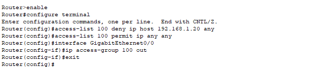
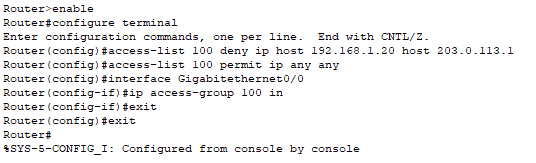

ACL Configuration Issues
Problem Description
Issue Overview:
Access Control Lists (ACLs) are powerful tools for controlling network traffic, but incorrect ACL configurations can lead to unexpected network behavior. This Layer 3 issue occurs when ACLs are improperly configured, resulting in either too restrictive or too permissive traffic filtering.
Common Symptoms:
- Specific hosts unable to access network resources
- Traffic being blocked that should be allowed
- Traffic being allowed that should be blocked
- Intermittent connectivity issues
- One-way communication (can send but not receive, or vice versa)
Root Causes:
- Incorrect ACL direction (in vs. out)
- Overly restrictive ACL entries
- Missing permit statements
- Incorrect order of ACL entries
- Applying ACLs to the wrong interface
- Forgetting the implicit "deny all" at the end of ACLs
Network Setup
Network Components:
- 1x Cisco 2911 Router (Router0)
- 1x Cisco 2960-24TT Switch (Switch0)
- 3x Client PCs (PC0, PC1, PC2)
- 1x Cloud (representing external network)
IP Addressing:
- Router0 GigabitEthernet0/0: 192.168.1.1/24 (internal network)
- Router0 GigabitEthernet0/1: 203.0.113.1/24 (external network)
- PC0: 192.168.1.10/24
- PC1: 192.168.1.20/24
- PC2: 192.168.1.30/24
Router Configuration
Router>enable
Router#configure terminal
Router(config)#interface GigabitEthernet0/0
Router(config-if)#ip address 192.168.1.1 255.255.255.0
Router(config-if)#no shutdown
Router(config-if)#exit
Router(config)#interface GigabitEthernet0/1
Router(config-if)#ip address 203.0.113.1 255.255.255.0
Router(config-if)#no shutdown
Router(config-if)#exitPC configuration with static IP addresses and default gateway pointing to Router0's internal interface.
Problem Demonstration
Incorrect ACL Configuration:
The ACL is incorrectly configured with the following issues:
- ACL 100 denies all traffic from PC1 (192.168.1.20) to any destination
- The ACL is applied in the outbound direction (out) on the GigabitEthernet0/0 interface
- This incorrect direction means the ACL filters traffic leaving the router toward the internal network, not traffic entering from PC1
Connectivity Test Results:
Despite the ACL being configured to block PC1's traffic, PC1 can still communicate with PC2 because the ACL is applied in the wrong direction.
Solution Steps
Step 1: Identify the ACL Issue
First, examine the current ACL configuration:
Router#show access-lists
Extended IP access list 100
10 deny ip host 192.168.1.20 any
20 permit ip any any
Router#show ip interface GigabitEthernet0/0
GigabitEthernet0/0 is up, line protocol is up
Internet address is 192.168.1.1/24
Outgoing access list is 100The issue is identified: the ACL is applied in the outbound direction, which means it filters traffic leaving the router toward the internal network, not traffic entering from PC1.
Step 2: Remove the Incorrect ACL
Router#configure terminal
Router(config)#interface GigabitEthernet0/0
Router(config-if)#no ip access-group 100 out
Router(config-if)#exit
Router(config)#no access-list 100
Router(config)#exitStep 3: Create a Properly Configured ACL

Router#configure terminal
Router(config)#access-list 100 deny ip host 192.168.1.20 host 203.0.113.1
Router(config)#access-list 100 permit ip any any
Router(config)#interface GigabitEthernet0/0
Router(config-if)#ip access-group 100 in
Router(config-if)#exit
Router(config)#exitThe corrected ACL configuration:
- Denies only traffic from PC1 (192.168.1.20) to the router's external interface (203.0.113.1)
- Permits all other traffic
- Is applied in the inbound direction (in) on the GigabitEthernet0/0 interface, which correctly filters traffic entering the router from the internal network
Verification and Testing
Successful ACL Implementation:
After implementing the correct ACL:
- PC1 can still communicate with PC2 (internal network traffic is not affected)
- PC2 can communicate with PC1 (internal network traffic is not affected)
- PC1 cannot access the router's external interface (blocked by ACL)
- PC2 can access the router's external interface (not blocked by ACL)
This confirms that the ACL is now correctly filtering only the specific traffic we want to block.
Troubleshooting Guide
Common ACL Issues and Solutions:
- Issue: ACL applied in wrong direction
Solution: Remember "in" filters traffic entering the interface, "out" filters traffic leaving the interface - Issue: ACL too restrictive
Solution: Make ACL entries more specific to target only the traffic you want to block - Issue: Missing permit statement
Solution: Always include "permit ip any any" at the end of extended ACLs unless you want to block all other traffic - Issue: ACL entries in wrong order
Solution: Remember ACLs are processed top-down; place more specific entries before general ones
Verification Commands:
show access-lists- View all configured ACLsshow ip interface [interface-name]- Check which ACLs are applied to an interfaceshow running-config | include access-list- View all ACL configurationsping [destination-ip]- Test connectivity to verify ACL effectiveness
Best Practices
- Always apply ACLs in the correct direction based on traffic flow
- Use extended ACLs close to the source of traffic
- Use standard ACLs close to the destination
- Document ACL purpose and entries for future reference
- Test ACL effectiveness after implementation
- Use named ACLs for better readability and management
- Be as specific as possible with ACL entries
- Remember the implicit "deny all" at the end of every ACL
Packet Tracer Simulation
Download the complete Packet Tracer simulation file to practice this configuration:
Download Simulation File